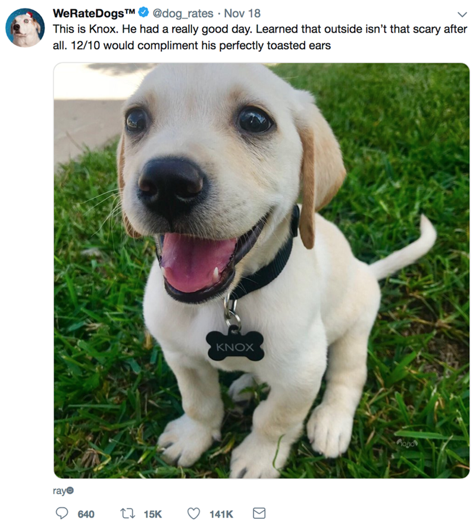

This project involves the analysis of tweets archive of Twitter user @dog_rates also known as WeRateDogs. WeRateDogs is a Twitter account that rates people's dogs with a humorous comment about the dog.
This Analysis will be used to answer certain questions like: what dog stage had the highest favorite count? what year and month did the highest tweets occur? what is the most frequent tweet source?
what are the predicted dog with the highest favorite count?


The dataset for this project was gotten from the Prosper Loan website, Prosper was founded in 2005 as the first peer-to-peer lending marketplace in the United States. Since then, it has facilitated more than 22 billion dollars in loans
to more than 1,350,000 people. Prosper Marketplace is backed by leading investors including Sequoia Capital, Francisco Partners, Institutional Venture Partners, and Credit Suisse NEXT Fund.
In this Analysis, I'm most interested in figuring out What factors affect the outcome status of a loan and factors that affects the borrower APR or interest rate?
.
In this exploration, three indicator datasets (Population, Female_employment and Breast_cancer) were used to observe trends and growth of different countries over a period of twenty years (2000 - 2019).
These datasets were downloaded from the Gapminder world website, a website that has collected a lot of information about how people live their lives in different countries, tracked across the years, and on a number of different indicators.